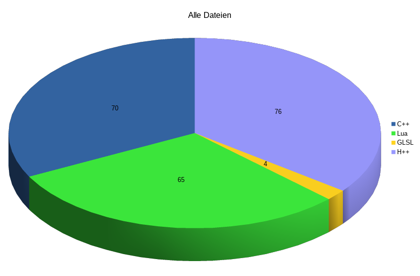

Sprachen
Wir verwenden verschiedene Programmiersprachen in unserem Spiel.
C++
Das Spiel selbst, die Engine, ist in C++ programmiert. Das beinhaltet unter anderem das Laden der benötigten Daten, die Organisation der Spielobjekte und die Darstellung mit Hilfe von OpenGL.
Lua
Der eigentliche Spielinhalt wird mit Lua realisiert. So sind unsere Aufgaben im Spiel, die Dialoge und der Spielablauf zur Laufzeit des Spiels änderbar.
Python und Bash
Python und Bash haben wir als Entwicklungshelfer verwendet.GLSL
Die OpenGL Shading Language diente zum Schreiben von Shadern.
Bibliotheken
Dieses Spiel verwendet mehrere Bibliotheken die unterschiedliche nützliche Funktionalität für das Spiel bereitstellen.
SDL
SDL (Simple DirectMedia Layer) ist ein wichtiger Grundstein unserer Engine. SDL kümmert sich um das Öffnen eines Fensters, um das Erstellen eines Renderkontexts für OpenGL und um die Benutzereingaben über Maus und Tastatur. Diese Bibliothek vereinfacht die oben beschriebenen Aufgaben und macht sie automatisch plattformunabhängig, da SDL als Abstraktion zum Betriebssystem dient.
OpenGL
OpenGL (Open Graphics Library) dient als systemunabhängige Schnittstelle zur Grafikhardware.
GLEW
GLEW (OpenGL Extension Wrangler Library) wird zum Initialisieren von OpenGL verwendet.
Programme
Diese Programme haben wir verwendet.
Blender
Mit Blender wurden unsere 3D Modelle erstellt.
Gimp
Gimp haben wir für unser Heightmap und Groundmap benutzt.
Inkscape
Mit Inkscape wurde unser Logo erstellt.
Qt-Creator
Das war unsere bevorzugte IDE.
vim
Ist immer mit dabei.
Statistik
Der ganze Quellcode besteht aus 11409 Zeilen davon sind 8342 Zeilen in C++ verfasst und 2211 in Lua. In dem folgenden Kuchendiagramm könnt ihr die Verteilung des Quellcodes in ihre zugehörigen Dateien sehen. 